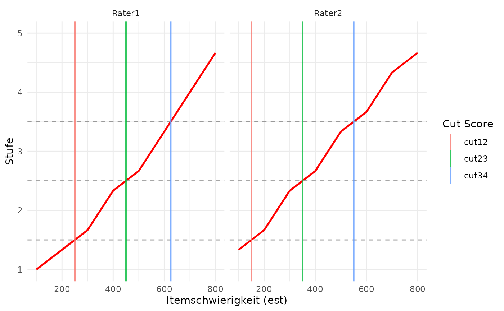
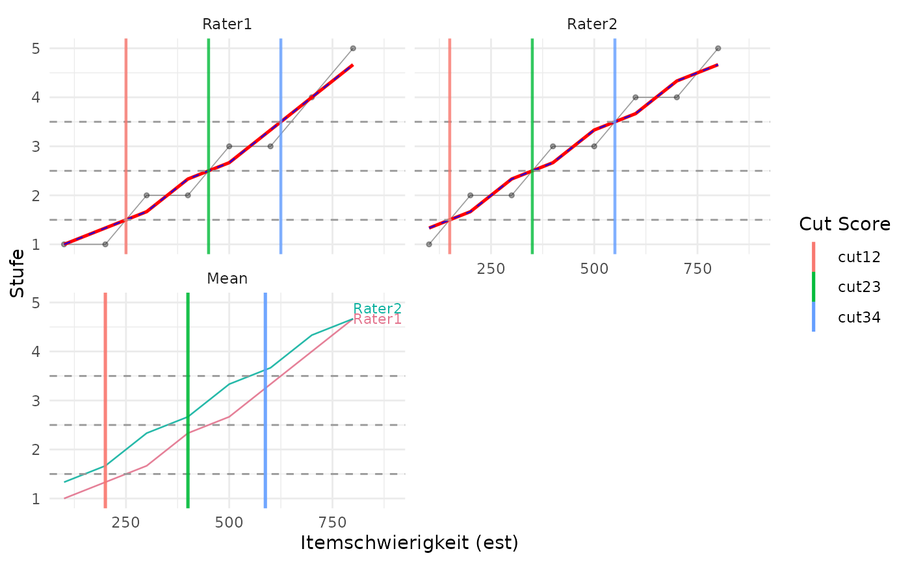
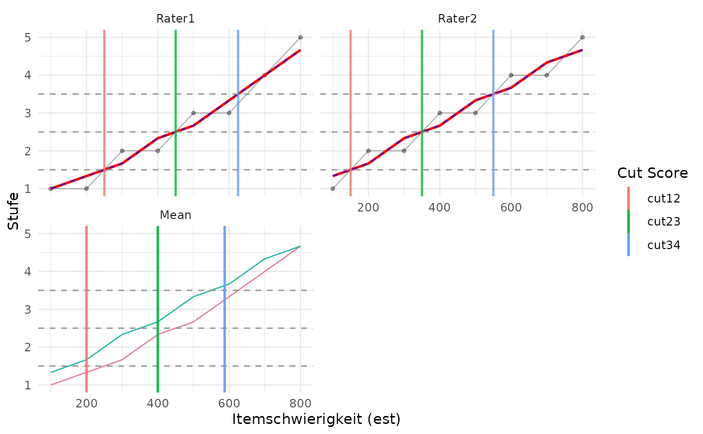
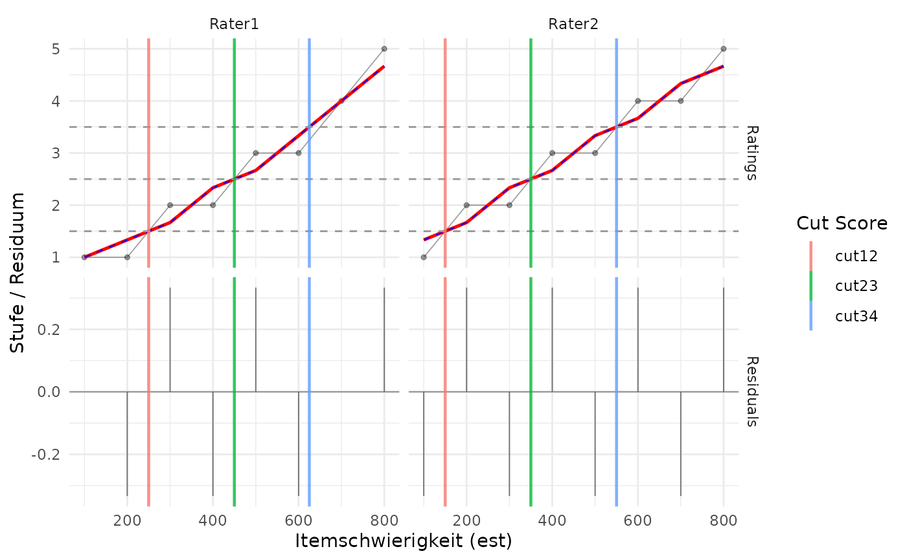

Plot Raw Values, Moving Average, and Monotonized Moving Average
plotCutsIDM.RdVisualizes the IDM rating process for each rater, showing raw ratings, smoothed moving averages, the final isotonic regression line used to determine cut scores, and optionally filter residuals.
Usage
plotCutsIDM(
res_list,
est_col = NULL,
show_raw = TRUE,
show_smoothed = TRUE,
show_residuals = FALSE,
show_aggregate = FALSE,
show_aggregate_labels = TRUE
)Arguments
- res_list
A list returned by
computeCutsIDM()containing the processed data and cut score coordinates.- est_col
Optional character scalar. Label to use for the item difficulty axis. If
NULL, the value stored bycomputeCutsIDM()is used.- show_raw
Logical scalar. If
TRUE, raw ratings are shown as points and as a thin line connecting items ordered by difficulty.- show_smoothed
Logical scalar. If
TRUE, the non-monotonized moving average is shown as a thin dashed blue line.- show_residuals
Logical scalar. If
TRUE, an additional residual panel is shown for each rater. Residuals are computed as raw rating minus smoothed moving average.- show_aggregate
Logical scalar. If
TRUE, an additional aggregate panel is shown. It overlays the monotonized rater curves in rater-specific colors and draws the mean cut scores fromres_list$cuts_summary.- show_aggregate_labels
Logical scalar. If
TRUE, rater names are shown near the right-hand end of the monotonized curves in the aggregate panel. Only used whenshow_aggregate = TRUE.
Details
One main idea of the IDM method is to account for rater noise by smoothing and monotonizing the relationship between item difficulty and the assigned levels. If show_raw = TRUE, grey points and a thin grey line show the original rater assignments after ordering items by difficulty. If show_smoothed = TRUE, a thin dashed blue line shows the moving average before monotonization. The red line represents the monotonized isotonic curve used to find the vertical intercepts. If the smoothed curve is already non-decreasing, the blue dashed line lies directly on top of the red line. Vertical cut lines are drawn at the cut scores stored by computeCutsIDM(), which are linearly interpolated boundary crossings of the monotonized curve.
Technically, the plot is constructed from res_list$plot_data. For each rater facet, the x-axis is the item difficulty column stored as est; the y-values are the raw rating stage stage_raw, the smoothed moving average stage_sm, and the monotonized isotonic fit stage_iso. Horizontal lines are drawn at res_list$boundaries. Vertical lines are drawn at the difficulty-scale cuts in res_list$cuts_per_person; therefore the plotted cut positions are on the same x-axis scale as the item difficulties. Interpolated item positions, if needed for tabular summaries, are stored separately in res_list$cut_positions_per_person.
With show_aggregate = TRUE, the plot adds an aggregate panel labelled Mean. This panel overlays the monotonized rater curves from the individual panels as thin colored lines and draws vertical lines at the mean difficulty-scale cuts in res_list$cuts_summary. With show_aggregate_labels = TRUE, the colored curves are labelled by rater name near their right-hand end. Label positions are adjusted vertically when several rater curves end at similar values. These mean cuts correspond to the cut scores reported by summary(res_list). The legend is reserved for cut score labels; aggregate rater colors are not added to the legend.
With show_residuals = TRUE, the plot uses an additional row of facets. The residual in item \(i\) is \(e_i = r_i - z_i\), where \(r_i\) is the raw rating and \(z_i\) is the smoothed moving average. Residuals are drawn as vertical segments from zero to \(e_i\). The cut lines are repeated in the residual panel so that large local deviations can be inspected relative to the final cut locations.
If computeCutsIDM() stored ordinal rating labels in res_list, these labels are used on the y-axis.
Examples
dat <- data.frame(
est = seq(100, 800, by = 100),
Rater1 = c(1, 1, 2, 2, 3, 3, 4, 5),
Rater2 = c(1, 2, 2, 3, 3, 4, 4, 5)
)
res <- computeCutsIDM(dat, boundaries = c(1.5, 2.5, 3.5))
plotCutsIDM(res)
 ## The plotted vertical lines correspond to these difficulty-scale cuts:
res$cuts_per_person
#> # A tibble: 2 × 4
#> person cut12 cut23 cut34
#> <chr> <dbl> <dbl> <dbl>
#> 1 Rater1 250 450 625
#> 2 Rater2 150 350 550
## Hide the auxiliary raw and smoothed functions:
plotCutsIDM(res, show_raw = FALSE, show_smoothed = FALSE)
## The plotted vertical lines correspond to these difficulty-scale cuts:
res$cuts_per_person
#> # A tibble: 2 × 4
#> person cut12 cut23 cut34
#> <chr> <dbl> <dbl> <dbl>
#> 1 Rater1 250 450 625
#> 2 Rater2 150 350 550
## Hide the auxiliary raw and smoothed functions:
plotCutsIDM(res, show_raw = FALSE, show_smoothed = FALSE)

## Add an aggregate panel with all monotonized curves and mean cuts:
plotCutsIDM(res, show_aggregate = TRUE)

## Hide rater labels in the aggregate panel:
plotCutsIDM(res, show_aggregate = TRUE, show_aggregate_labels = FALSE)

## Add residual panels:
plotCutsIDM(res, show_residuals = TRUE)
